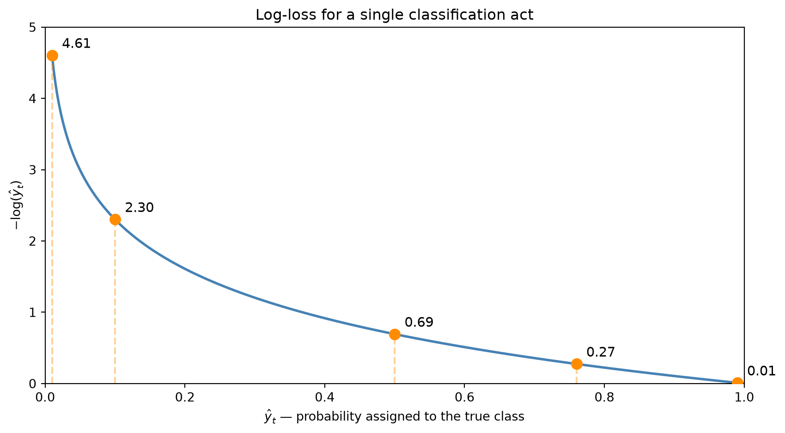
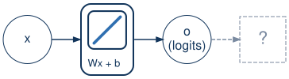
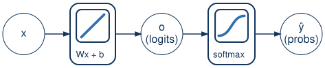

Advanced Machine Learning
This slide deck is still under active development. Expect changes before it is finalized.
Predicting which, not how much
What we already have
What’s different now
spam or not spamcat or dogSome questions don’t have a numeric answer — they have a category as the answer.
We’ll sort pieces of fruit into apple, banana, or orange, from two features:
| weight (g) | color score (0=green, 1=red) | fruit |
|---|---|---|
| 150 | 0.9 | apple |
| 120 | 0.2 | banana |
| 180 | 0.7 | orange |
Each individual category is binary — it is, or it isn’t.
-1.3, 4.7, …); rounding to the nearest code is a patch, not a fix, and a 1.99 vs. a 1.01 both round to “banana” without feeling equally confidentGive every category its own slot, and just mark which one is true.
| fruit | apple | banana | orange |
|---|---|---|---|
| apple | 1 | 0 | 0 |
| banana | 0 | 1 | 0 |
| orange | 0 | 0 | 1 |
Note
Compare to the integer coding from a few slides ago — apple, banana, and orange no longer have any numeric relationship to each other at all
Linear scores — for now
Important
\mathbf{o} is not our prediction yet — one more function still needs to act on it
Suppose, for one particular (weight, color) example, evaluating o_j = \mathbf{w_j} \cdot \mathbf{x} + b_j for each class gives:
| apple | banana | orange |
|---|---|---|
| −0.3 | 2.1 | 0.6 |
Warning
So the answer is just “banana,” done? That’s not actually what we do — why not?

From scores to probabilities
We make each prediction act like a probability – without changing which class wins.
\hat y_j = \text{softmax}(\mathbf{o})_j = \frac{e^{o_j}}{\sum_{k=1}^K e^{o_k}}

Numerator
e^{o_j}
Denominator
\sum_{k=1}^K e^{o_k}
Note
Divide one by the other: squeezes every class’s share into [0,1], and all K shares add up to exactly 1
Recall our logits: apple =-0.3, banana =2.1, orange =0.6
| apple | banana | orange | |
|---|---|---|---|
| e^{o_j} | 0.74 | 8.17 | 1.82 |
| \hat y_j | 0.07 | 0.76 | 0.17 |
argmax
Loss function for multi-classification
MSE only knows “off by how much”; it can’t tell unsure apart from confidently wrong
Being confidently wrong should cost a lot more than being unsure
Penalize the model by how little probability it gave the correct answer.
L(\mathbf{y}, \hat{\mathbf{y}}) = -\sum_{j=1}^K y_j \log \hat y_j
| \hat y_t (true class probability) | -\log \hat y_t |
|---|---|
| 0.99 | 0.01 |
| 0.76 | 0.27 |
| 0.50 | 0.69 |
| 0.10 | 2.30 |
| 0.01 | 4.61 |
One classification act — one example, one true class — costs -\log \hat y_t:

Recall our softmax output: apple =0.07, banana =0.76, orange =0.17 — and the true label is banana
Surprisingly easy calculus
This scary-looking loss has a gradient just as simple as linear regression’s.
Recall L = -\log (\hat y_t), where \hat y_t = \dfrac{e^{o_t}}{\sum_k e^{o_k}} — substituting one into the other fuses log-loss and softmax into a single expression, before we differentiate anything:
-\log\frac{e^{o_t}}{\sum_{k=1}^K e^{o_k}} \;=\; -\log(e^{o_t}) + \log\sum_{k=1}^K e^{o_k} \;=\; -o_t + \log\sum_{k=1}^K e^{o_k}
Important
All that softmax and log-loss machinery, and the gradient still just says “how wrong were we” — negative for the true class (push its logit up), positive for every other class (push them down)
Same loop, new loss
Nothing about the training loop changes — only the loss, and what “prediction” means.
Same as before
New this lecture
| Task | classify each example into one of K categories |
| Example | apple / banana / orange, from weight + color |
| Model output | logits → softmax → a probability vector |
| Loss | cross-entropy |
Note
This recipe — categorical output, softmax, cross-entropy — is the template for classification problems in general, not just this one
Tip
In lab: walk one example through a full forward pass (logits → softmax → cross-entropy) and backward pass (the gradient) by hand, with actual numbers
CST463 · Advanced Machine Learning